suzan
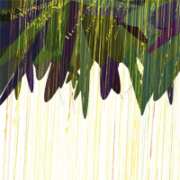
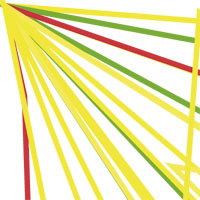
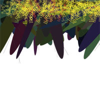
start of from the data off sms messages.
The date/time of each message is used as a parameter set to make a design
e.g. 20/01/2003 is converted as
rect(20,01,20,03)
elina
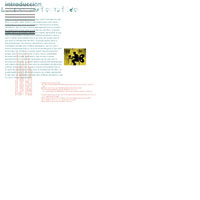
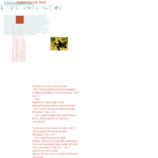
8 colors automatically selected: white, black, red, green, blue, brown, green, ?
color --> sent to friends --> asking what they think of that color.
CMYK books of colors. going to make small ones and put the words inside the pictures to make a really small 724 page book.
images are drawn by hand or taken from the internet
Q: how do you use heartbeat font?
mikko
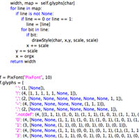
metafont
dictionary which contains
generating automatic text
also generating automatic images using flash
encode a stroke into a string
brainstorming book, fully automated
mikko
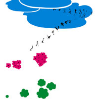
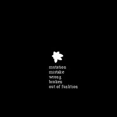
circle of life
automation itself is in the nature
if there's a tree, it grows, it has rule. when the tree collapses, there comes a new one
main actress is "a green one". it starts from the seed and then it dies.
some other characters appear, some with a shorter lifespan, others with a much longer lifespan.
black pages in the book
font are like a flock of (lowercase) birds that migrate in the beginning, and come back as uppercase.
automation is a natural way of doing things
jurriaan
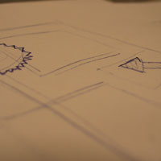
automate beginning of life, genesis story
think about infinity, how to make a book about infinity
got stuck
then: book automating you (not in aggresive way)
idea from the first week. a way to learn you something.
rasmus
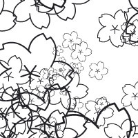
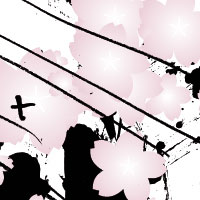
metafont was made to stretch something until its 700 pages long
when you stretch an image, you don't see anymore what the image is, you'd see the pixels.
when you stretch content, what would it look like
start using a haiku, and expand it to 700 pages.
playing around with drawbot
next step: expand the information in the haiku itself
when you bring in information outside of the haiku, then it isn't about the haiku itself anymore. you shouldn't destroy the poem. what does it mean, what's the haika about?
antti
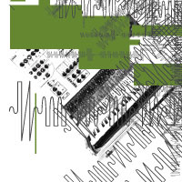
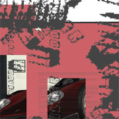
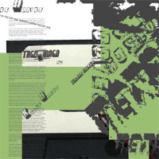
making something about music 'cos the font is about waveforms
automated --> electronic music
however, not limited to one music style, all styles are possible.
"technofucker"
designing spreads
britt
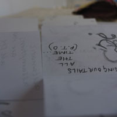
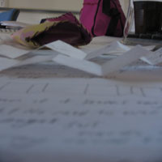
went to library
how can information be packed, crammed into the book
maybe make a small book that unfolds
automatically it's one long page.
want to force you
you can't read it easily, wants to slow you down
it doesn't have a starting point, not gonna page number it
random numbering
several short phrases that could be repeated throughout: "patience is a gift" "take your time"
very small plain text
somethings fades in the distance
repeat the idea
use the ask mama font, few letters here and there
title: "automatic assumptions are made all the time..."
neon-green, grey, black, blue (duracell colors)
images (clocks, stopwatches, timers)
Q: where's the real content, instead of the system
Q: maybe allow the reader to see how the story would end
elisenda
logical progression,
logical way of working with drawbot related to my idea
"neverending story"
thinking more about the original concept for the metafont,
there's nothing automatic, really. you're the one behind it working
putting error text in the book. to make it clear that there's one someone behind it
let the book talk about himself
photograph, text, title
doing more more complex stuff
long lists of words. by random, the program chooses one. for each word, the program does things
with one program, generate the whole book. that would be the real automatic thing.
niko
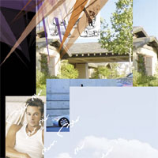
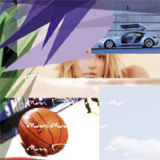
"a big interesting book"
parody about design and publishing industry
automation is automatic, press the button, the final step is the money and you don't care about anything.
20 or 30 pages of foreword.imaginary conversation between people. what kind of book should we make. most important is that it should be made as fast as possible, and that people will buy it. "mister times" vs. "mister arial".
the rest is just images that look interesting (e.g. britney spears half naked)
lots of the themes are cartoons, basketball, half-naked people, and some elements that make it look trendy.
after a while, the content gets lower and lower. using the metafont that goes further and further on.